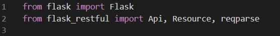
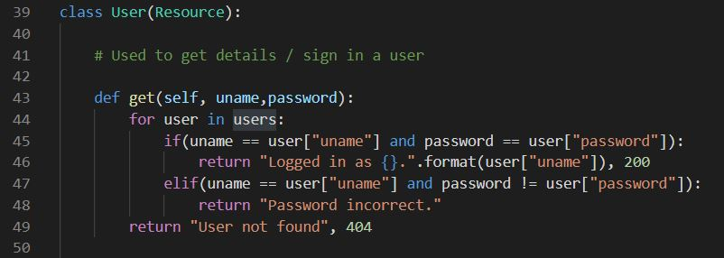
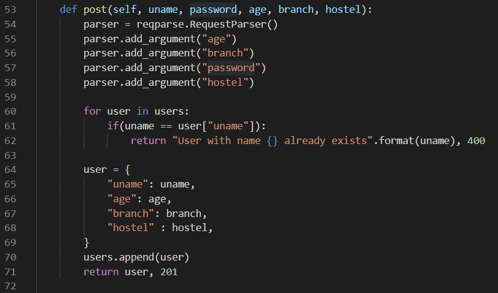
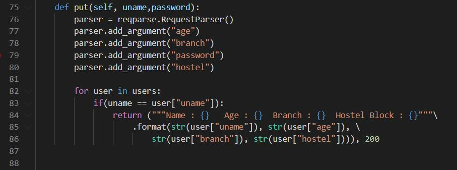
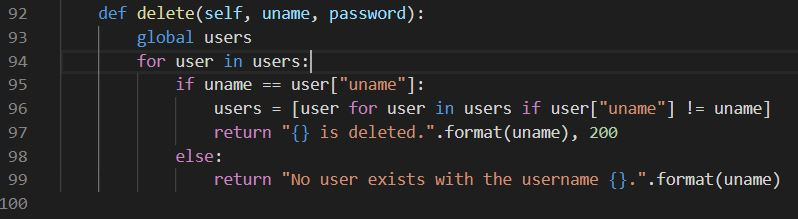
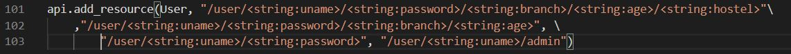
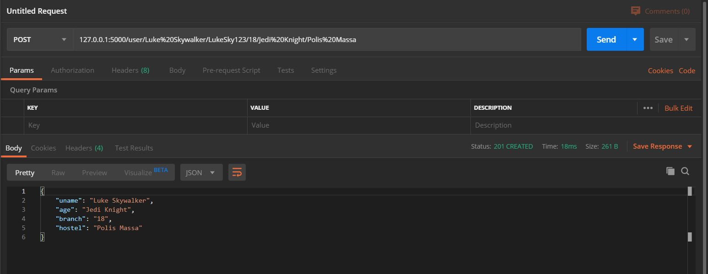

Abhinav Gorantla

So I got a project to create a REST API for login and sign up for a club recruitment in my University.
This blog is a brief description of the process I followed.
Prior knowledge required:
I started off reading what actually a REST API was. This is what I found out:
A common example of REST API is the Google search bar we find on some third party websites like Geeks for Geeks. You can have a question at this point.
Google has doesn't support iframes. You need to use use the Custom Search JSON API to develop websites and applications to retrieve
data from a google search. Many other service providers have started doing this.
Now let's get back to my project. The next thing I did after knowing what a REST API was that I read some Medium articles on that topic and then started off by taking that
as my starting point.
The actual process:

Here, we are importing the Flask module. Observe the capital letters in the words Api, Flask and Resource. This shows that we are importing a class.
After importing these required modules, we then create a sample data space. Usually for real world applications, we link a database using mySQL but here, for this mini
project, a sample data with three or four users will also get the job done.

Next I created a class "Users" which has all the endpoints where data can be accessed using the API. I defined the GET, POST, PUT and DELETE functions. Each of them had
different sets of input data i.e different URL endpoints as you will see below. I wanted to design the GET method to make the user sign in with their account. But, as I did not
know how to encryot the user passwords, I changed it's function to get the details of the user.

The GET method takes in user password and username as it's inputs and gives out the message "Logged in as {Username}." as output. If the password is wrong then, it returns
the message "Password incorrect.". All the other methods are listed below and are self explanatory.
The POST method is used to create a new user.

The PUT method is used to update the data of an existing user.

You will probably know what the DELETE method is supposed to do.

Now I had a basic API. To make use of it I had to define URLs with endpoints. These endpoints are the data points where the functionswe defines earlier can access their input values.
We do this by:

I added the paths by declaring several URLs using the api.add_resource(class, path1, path2, ....). After all this you need to test your REST API. This is done using an API testing tool.
Some commonly used API testing tools are Postman and Insomnia. For testing my project, I used Postman.
I have added only the test results of POST in this blog. You can try for all other methods also.

You can get the documentation and code for my project here.